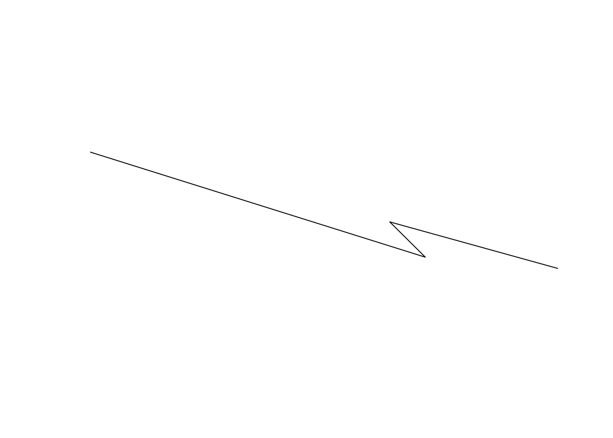
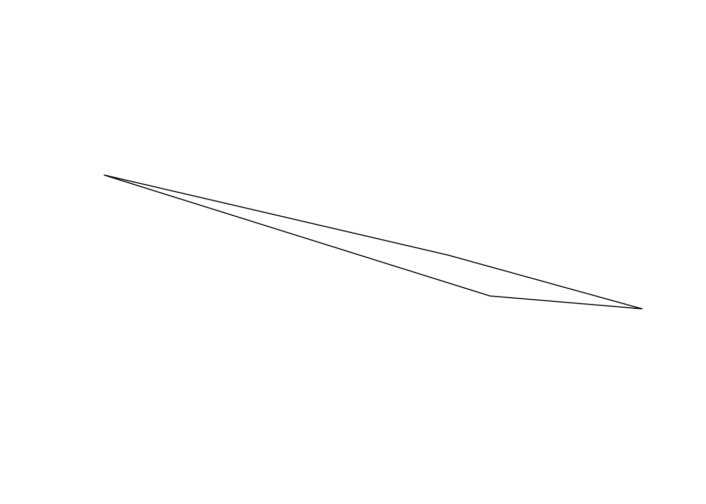

We can keep geospatial data in numerical format in normal R structures quite easily. However, there are some reasons we may want to adopt a slightly more sophisticated approach to dealing with our geospatial data. There are several R packages out there for this and the one covered and used here is the sf (Simple Features) package. There are several reasons for this, the most important of which is that it provides a nice interface to work with that integrates with other anlaytical tools.
Here is some pseudo-hypothetical data to illustrate the basics of the sf objects.
coords <- matrix( c(-122.4787, 48.7519,
-90.1994, 38.6270,
-93.6319, 42.0308,
-77.4527, 37.5483 ),
ncol=2, byrow = TRUE)
coords## [,1] [,2]
## [1,] -122.4787 48.7519
## [2,] -90.1994 38.6270
## [3,] -93.6319 42.0308
## [4,] -77.4527 37.5483sf ObjectsThere are three basic types of objects: simple feature geometries (sfg), simple features as columns (sfc), and plain simple features (sf). Here is how we get to these.
Starting off with a point, we can define a 2-dimensional coordinate as (by default it is X then Y, so Longitude then Latitude):
## [1] "XY" "POINT" "sfg"Which is simultaneously a POINT object, with XY coordinates, and a Simple Feature Geometry object. Point objects may also have a third coordinate (elevation) or a fourth (often used as precision).
## [1] "XYZ" "POINT" "sfg"Lines are a collection of coordinates. Here are the same points as before turned into a LINESTRING object.
## [1] "LINESTRING (-122.4787 48.7519, -90.1994 38.627, -93.6319 42.0308, -77.4527 37.5483)"which looks like this.

A polygon is a line sequence whose first and last coordinate are the same. We can specify them as a series of points (as above) or derive it from existing structrues. Here is an example where we grab the convex hull (essentially the polygon that encloses all the points as if there was a rubber band stretched around them), using the st_convex_hull function on the LINESTRING object.
## [1] "XY" "POLYGON" "sfg"And can be turned into a polygon as:

sf Objects.We can put a bunch of sfg objects into a list and make a collection.
pt_stl <- st_point( coords[2,] )
pt_ame <- st_point( coords[3,] )
pt_rva <- st_point( coords[4,] )
pts <- list(pt_bel, pt_stl, pt_ame, pt_rva)
class(pts)## [1] "list"To make this a collection of sf objects we:
## [1] "sfc_POINT" "sfc"## Geometry set for 4 features
## geometry type: POINT
## dimension: XY
## bbox: xmin: -122.4787 ymin: 37.5483 xmax: -77.4527 ymax: 48.7519
## epsg (SRID): NA
## proj4string: NAHowever, for completeness, this is really a collection of several points, and is probably more realistically appropriate to be turned into a MULTIPOINT object. For all objects in sf, there are MULTI versions of them for when you have multiple copies. To perform this coversion, we cast the object into a new type (also called coercing the object in the same way you can coerce an integer into a boolean in R). Here is an easy way to do it.
## Geometry set for 4 features
## geometry type: MULTIPOINT
## dimension: XY
## bbox: xmin: -122.4787 ymin: 37.5483 xmax: -77.4527 ymax: 48.7519
## epsg (SRID): NA
## proj4string: NAThere are specific rules associated with casting, for example the following fails
## Warning in st_cast.MULTIPOINT(., "POINT"): point from first coordinate only## POINT (1 2)Each of the base types has an eqivallent MULTI version.
In addition to these, there are many other geometries available. Most of these are combinations of the point, line, & polygon but are useful in specific situations. These include CIRCULARSTRING, COMPOUNDCURVE, CURVEPOLYGON, CURVE, MULTICURVE, SURFACE, MULTISURFACE, POLYHEDRALSURFACE, TIN, and TRIANGLE. For more information on these, see the PostGIS manual.
There are several built-in methods assocaited with sf objects, just as there are for other things in R. When you say plot(x), the kind of thing that x is will determine what function is called. While an sf object is a fancy data.frame with extra propeties, here are a list of recognized methods that you can use with these objects.
## [1] [ [[<- $<-
## [4] aggregate anti_join arrange
## [7] as.data.frame cbind coerce
## [10] dbDataType dbWriteTable distinct
## [13] extent extract filter
## [16] full_join gather group_by
## [19] group_map group_split identify
## [22] initialize inner_join left_join
## [25] mask merge mutate
## [28] nest plot print
## [31] raster rasterize rbind
## [34] rename right_join sample_frac
## [37] sample_n select semi_join
## [40] separate_rows separate show
## [43] slice slotsFromS3 spread
## [46] st_agr st_agr<- st_area
## [49] st_as_sf st_bbox st_boundary
## [52] st_buffer st_cast st_centroid
## [55] st_collection_extract st_convex_hull st_coordinates
## [58] st_crop st_crs st_crs<-
## [61] st_difference st_geometry st_geometry<-
## [64] st_interpolate_aw st_intersection st_intersects
## [67] st_is st_join st_line_merge
## [70] st_nearest_points st_node st_normalize
## [73] st_point_on_surface st_polygonize st_precision
## [76] st_segmentize st_set_precision st_simplify
## [79] st_snap st_sym_difference st_transform
## [82] st_triangulate st_union st_voronoi
## [85] st_wrap_dateline st_write st_zm
## [88] summarise transmute ungroup
## [91] unite unnest
## see '?methods' for accessing help and source codeAs you see, you can use the square braket and dollar sign notation just for data.frames. You should also notice several of the functions associated with dplyr (e.g., distinct, filter, mutate, merge, sample, summarize, etc.). Then there is all those st_ functions at the bottom. These are what we call generic functions that operate on these objects and are what we use for geospatial analyses.
Look at the generics for sfc
## [1] [ [<- as.data.frame
## [4] c coerce format
## [7] fortify identify initialize
## [10] obj_sum Ops print
## [13] rep scale_type show
## [16] slotsFromS3 st_area st_as_binary
## [19] st_as_grob st_as_sf st_as_text
## [22] st_bbox st_boundary st_buffer
## [25] st_cast st_centroid st_collection_extract
## [28] st_convex_hull st_coordinates st_crop
## [31] st_crs st_crs<- st_difference
## [34] st_geometry st_intersection st_intersects
## [37] st_is st_line_merge st_nearest_points
## [40] st_node st_normalize st_point_on_surface
## [43] st_polygonize st_precision st_segmentize
## [46] st_set_precision st_simplify st_snap
## [49] st_sym_difference st_transform st_triangulate
## [52] st_union st_voronoi st_wrap_dateline
## [55] st_write st_zm str
## [58] summary type_sum
## see '?methods' for accessing help and source codeand sfg
## [1] as.matrix c coerce
## [4] format fortify head
## [7] initialize Ops plot
## [10] print show slotsFromS3
## [13] st_area st_as_binary st_as_text
## [16] st_boundary st_buffer st_centroid
## [19] st_collection_extract st_convex_hull st_coordinates
## [22] st_difference st_geometry st_intersection
## [25] st_intersects st_is st_line_merge
## [28] st_nearest_points st_node st_normalize
## [31] st_point_on_surface st_polygonize st_segmentize
## [34] st_simplify st_snap st_sym_difference
## [37] st_transform st_triangulate st_union
## [40] st_voronoi st_wrap_dateline st_zm
## see '?methods' for accessing help and source code